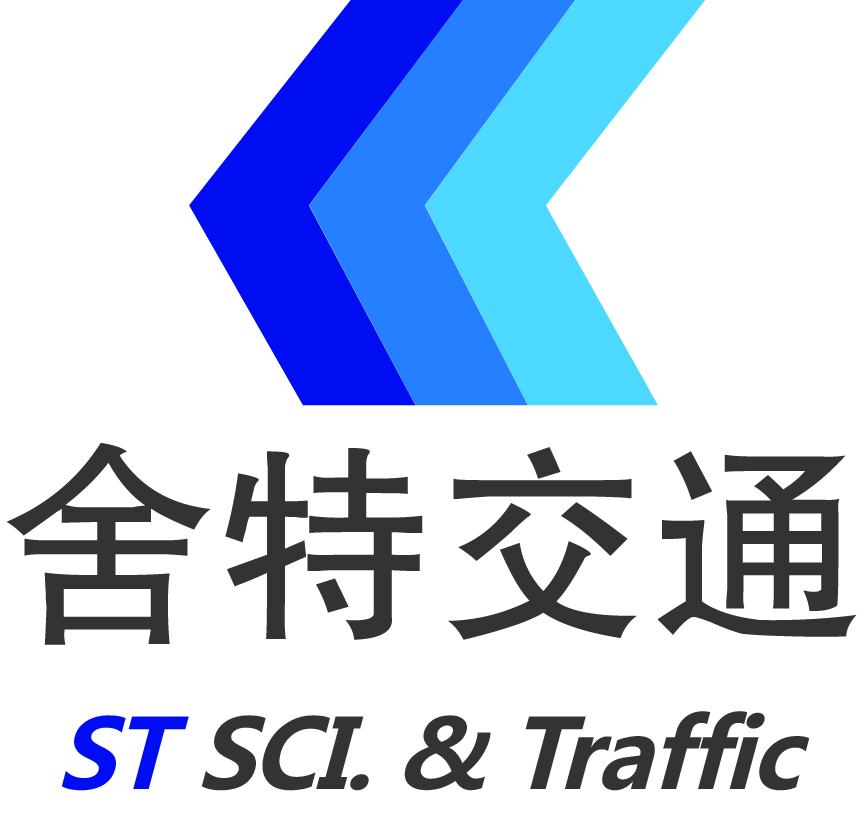

<!-- Navigation -->
<nav class="navbar navbar-custom navbar-fixed-top">
	<div class="container">
		<div class="navbar-header">
			<button type="button" class="navbar-toggle" data-toggle="collapse" data-target=".navbar-main-collapse"> <i class="fa fa-bars"></i> </button>
			<a class="navbar-brand page-scroll" href="#page-top"> 
				 
			</a>
		</div>
		<!-- Collect the nav links, forms, and other content for toggling -->
		<div class="collapse navbar-collapse navbar-right navbar-main-collapse">
			<ul class="nav navbar-nav">
				<li class="active"><a href="#section-intro" class="page-scroll"></a></li>
				<li><a class="page-scroll" href="#section-features">安行动态</a></li>
				<li><a class="page-scroll" href="#section-gongl">出行指南</a></li>
				<li><a class="page-scroll" href="#section-services">安行智库</a></li>
				<li><a class="page-scroll" href="#section-luntan">会展论坛</a></li>
				<!-- <li><a class="page-scroll" href="#section-jiaotong">智慧交通</a></li> -->
				<li><a class="page-scroll" href="#section-portfolio">安行产品</a></li>
				<li><a class="page-scroll" href="#section-hezuo">战略合作</a></li>
				<li><a class="page-scroll" href="#section-shizilukou">十字路口</a></li>
				<li><a class="page-scroll" href="julebu.html">加入安行俱乐部</a></li>
				<li><a class="page-scroll" href="#section-contact">联系我们</a></li>
			</ul>
		</div>
		<!-- /.navbar-collapse -->
	</div>
	<!-- /.container -->
</nav>
<!-- navbar end -->
